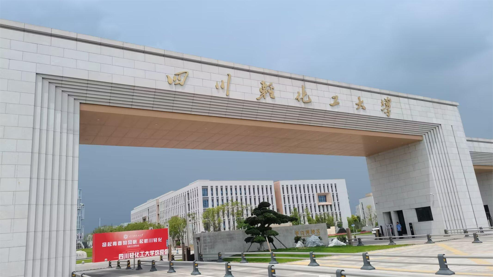

Sichuan University of Science & Engineering is a university jointly built by Sichuan Provincial People's Government and the State Administration of Science, Technology and Industry for National Defense. It is a full-time institution of higher learning with nearly 60 years of undergraduate education and nearly 20 years of postgraduate education, with the coordinated development of nine disciplines including engineering, science, management, education, literature, history, art, law and economics. The university is located in two national historical and cultural cities, Zigong City and Yibin City, with four campuses in Libaihe, Huidong, Yibin and Huangling. The university has a long history and excellent educational tradition, and has won the national "Central and Western Universities Basic Capacity Construction Project" twice in a row. It is the National Excellent Engineer Education and Training Program university, the National Language promotion base, the national intellectual property pilot university, the Ministry of Education data China "100 school Project" construction university, the Ministry of Education's first batch of scientific and technological achievements transformation and technology transfer base, the national college students Innovation and entrepreneurship training program university, the first batch of Sichuan Province postdoctoral innovation practice base, Sichuan Province to study in China Fan Base, the first batch of innovative reform pilot universities in Sichuan Province, Sichuan Province to deepen innovation and entrepreneurship education reform demonstration university, Sichuan Province high-tech industry demonstration research unit, China Wine Industry Association and Wuliangye Group co-built "China Liquor College".
Huidong Campus

Yibin Campus

Li Baihe Campus
Infrastructure: The school has a beautiful environment and picturesque scenery, which is an ideal place for students to lay the foundation for their life dreams and teachers to realize their academic ambitions. The magnificent Yibin campus is known as the "Yibin tourist punch card Mecca", and the magnificent modern Zigong Libaihe campus is known as "other people's university". The university covers an area of more than 4,600 mu, with a construction area of nearly 1.7 million square meters, and the total value of state-owned assets exceeds 10 billion yuan. At present, the library has a total volume of 3.07 million copies of paper documents, 1.65 million copies of electronic books, 10.24 million academic disserations, 124 Chinese and foreign language databases (including sub-databases), and 10 self-built characteristic databases.
music fountain

Overlooking the campus

Campus night view
Campus morning